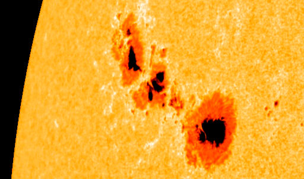
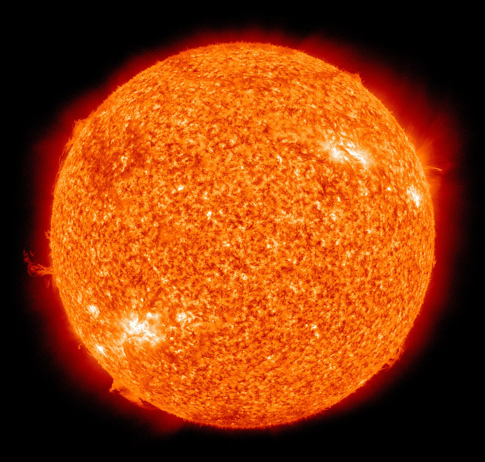
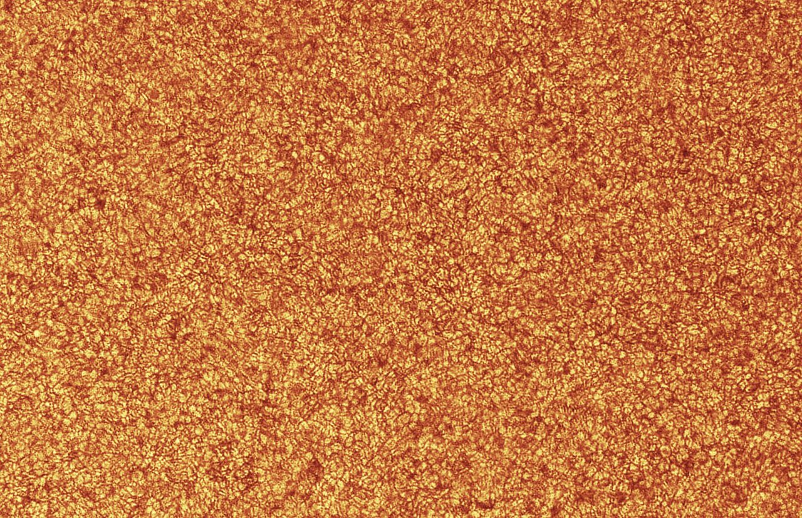
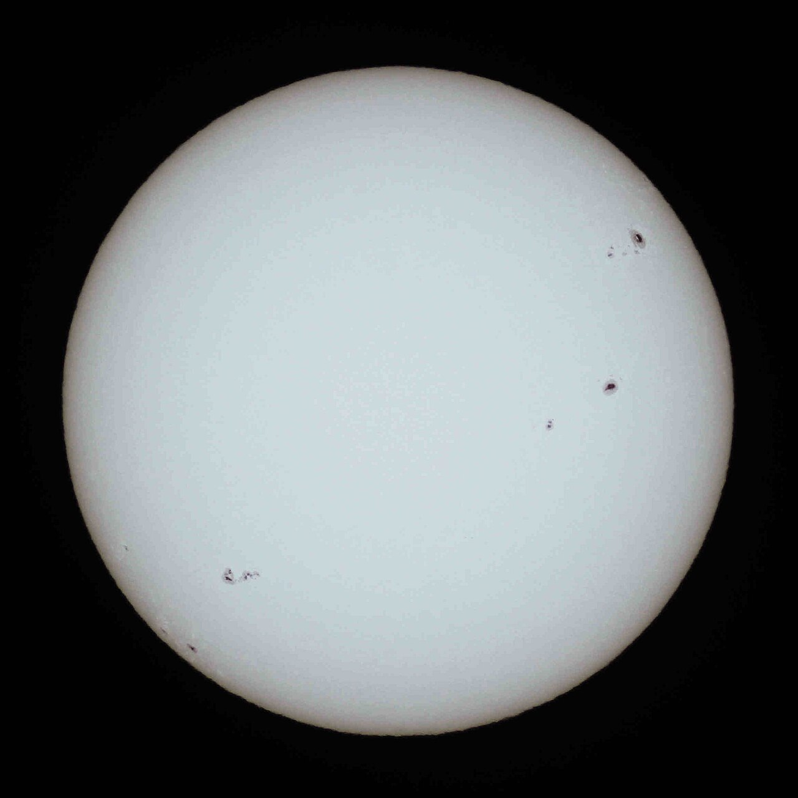
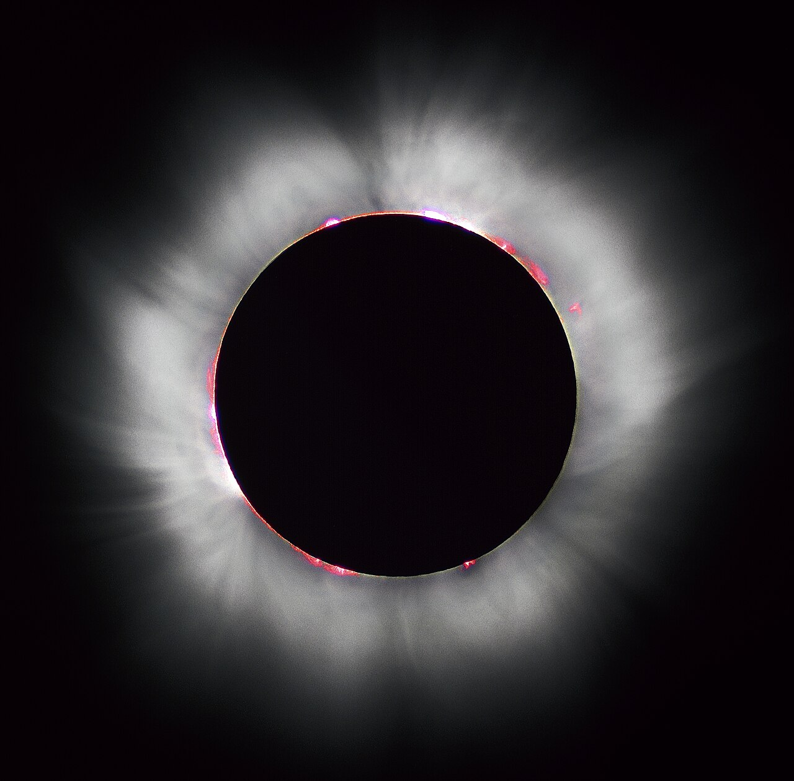
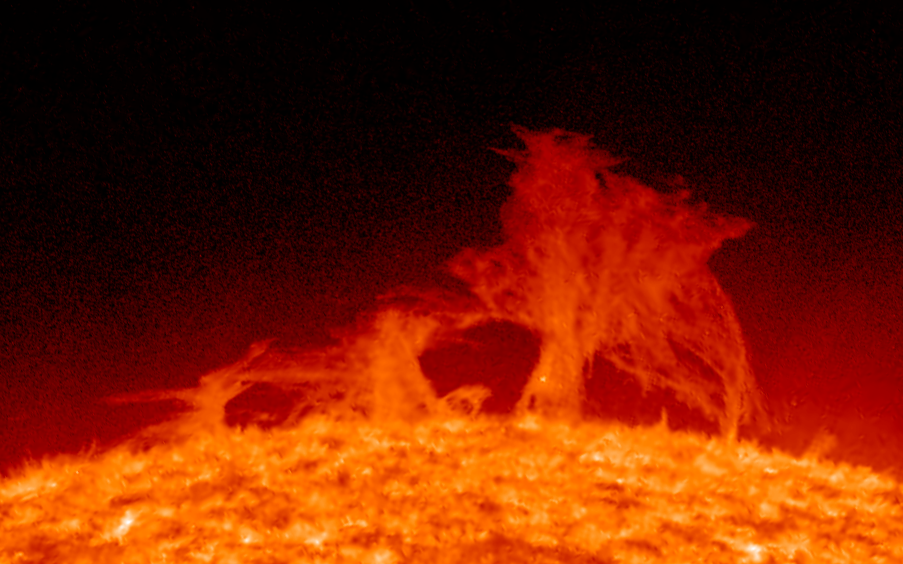
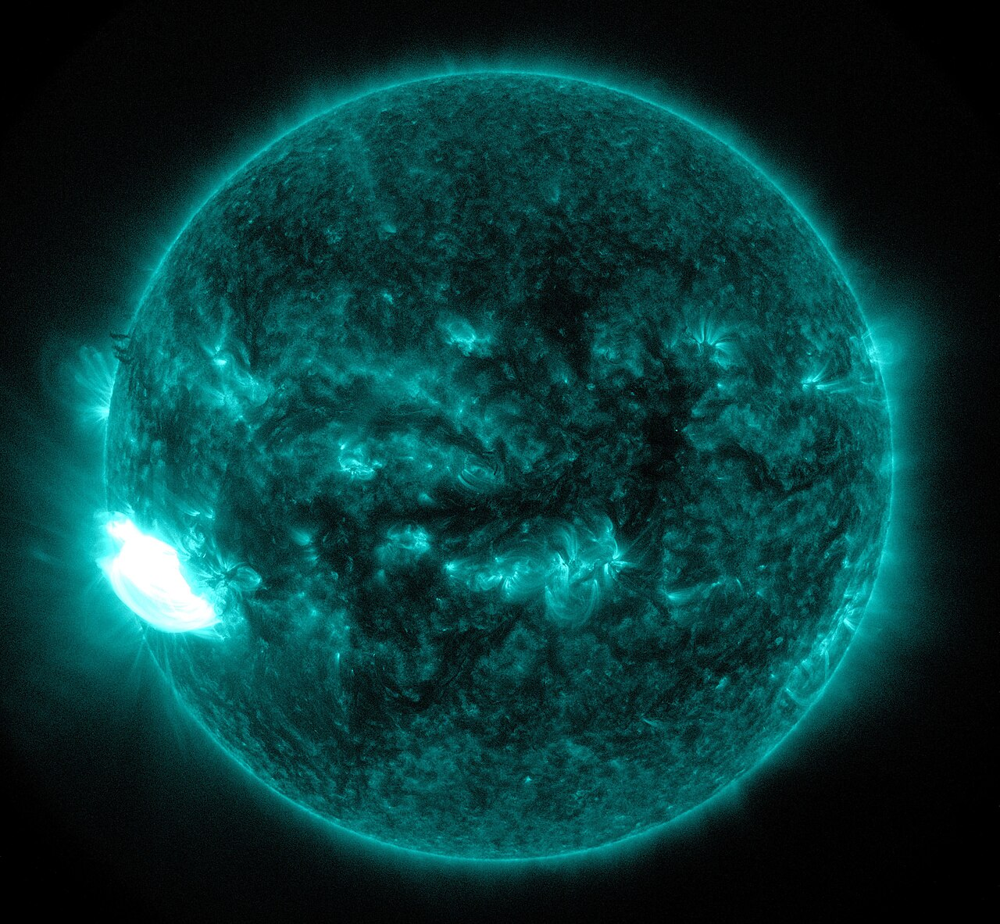

동기 유발
같은 날, 같은 태양, 다른 얼굴
교과서 p. 48학습 목표
- 태양의 광구와 대기에서 나타나는 현상을 설명할 수 있다.
- 광구와 대기의 현상이 다양한 파장의 관측 자료에서 어떻게 나타나는지 비교할 수 있다.

NASA/SDO, 퍼블릭 도메인

NASA/SDO/AIA, 퍼블릭 도메인
왼쪽은 매끈한 공에 점 몇 개, 오른쪽은 불꽃이 휘감은 공이다.
둘 다 같은 태양인데 왜 이렇게 다르게 보일까?
둘 다 같은 태양인데 왜 이렇게 다르게 보일까?
관측 파장에 따라 '보이는 층(온도)'이 다르다는 점이 이 차시의 큰 질문입니다. 개념 3의 다파장 관측기와 연결합니다. 태양을 직접 볼 때는 반드시 태양 필터나 투영법을 써야 함을 안전 지도합니다. 운영안 4차시(광구 1 / 탐구: 자전 주기 1 / 대기·다파장 1 / 데이터 탐구 1).
핵심 개념 1
태양의 광구
교과서 p. 48 ~ 49(1) 태양의 내부와 광구
- 내부 구조: 핵(수소 핵융합, 약 1500만 K) → 복사층(복사로 에너지 전달) → 대류층(대류로 전달) → 광구
- 광구: 우리 눈에 보이는 태양의 표면. 평균 온도 약 5800 K. 두께는 수백 km에 불과하다.
- 쌀알 무늬: 광구 바로 아래 대류층의 대류 때문에 생긴 무늬. 밝은 곳은 뜨거운 물질이 올라오는 곳, 어두운 경계는 식은 물질이 내려가는 곳이다.
- 주연 감광: 태양 가장자리는 중심보다 어둡다. 가장자리에서는 시선이 광구의 더 높고 차가운 층까지만 들어가기 때문이다.

PetrusQ, CC BY 4.0

Geoff Elston, CC BY 4.0
(2) 흑점과 태양의 자전
- 흑점: 광구에서 주변보다 온도가 약 1500 ~ 2000 K 낮아 어둡게 보이는 부분. 가운데 어두운 암부와 주변의 반암부로 이루어진다.
- 흑점에는 강한 자기장(지구 자기장의 수천 배)이 있어 아래에서 올라오는 대류를 막기 때문에 온도가 낮다.
- 흑점은 동쪽 가장자리에서 서쪽으로 이동한다 → 태양은 자전한다.
- 차등 자전: 적도 부근의 자전 주기는 약 25일, 고위도로 갈수록 길어져 극 부근은 약 35일. 태양이 고체가 아닌 기체(플라스마)이기 때문이다.
시뮬레이션 1흑점을 따라가며 자전 주기 재기
위도 0°, 20°, 35°에 있는 흑점 A, B, C의 경도(중앙 자오선 기준)를 며칠 간격으로 기록해 보자. 하루에 움직인 경도 Δλ로 회합 자전 주기 = 360° ÷ (Δλ/일)을 구한다.
핵심 개념 2
흑점 주기와 태양 활동
교과서 p. 4911년마다 반복되는 태양 활동
- 흑점 수는 약 11년을 주기로 늘었다 줄었다 한다. 가장 많을 때가 극대기, 가장 적을 때가 극소기이다.
- 극대기에는 플레어·홍염·코로나 물질 방출이 잦고 코로나가 크고 밝아진다. → 우주 기상 위험이 커진다(I-02).
- 나비 도표: 한 주기가 시작될 때 흑점은 위도 30° 부근에 나타나고, 주기가 진행될수록 점점 적도 쪽으로 내려온다(슈푀러 법칙).
- 흑점의 자기 극성은 주기마다 바뀌어, 자기장까지 고려한 주기는 약 22년이다.
시뮬레이션 2나비 도표 만들기: 흑점의 위도는 어떻게 변할까?
왼쪽은 그 해의 태양 모습, 오른쪽 위는 흑점이 나타난 위도(나비 도표), 오른쪽 아래는 흑점 수이다. 시간이 흐르며 흑점 띠가 적도로 내려오는 모습이 나비 날개처럼 보이는지 확인하자.
핵심 개념 3
태양의 대기와 다파장 관측
교과서 p. 52 ~ 53(1) 채층과 코로나, 그리고 대기에서 일어나는 현상
- 채층: 광구 바로 위 두께 약 2000 km의 붉은 대기층(약 1만 K). 수소의 Hα선(656.3 nm)을 강하게 내 붉게 보인다. 불꽃 모양의 스피큘이 솟는다.
- 코로나: 채층 위로 수백만 km까지 퍼진 진주색 대기. 밀도는 매우 낮지만 온도는 100만 K 이상. 평소에는 광구가 너무 밝아 보이지 않고 개기 일식 때나 코로나그래프로 본다.
- 홍염: 채층의 물질이 자기력선을 따라 코로나 속으로 고리·기둥 모양으로 솟은 것. 태양 면 위에서는 어두운 필라멘트로 보인다.
- 플레어: 흑점 부근의 자기 에너지가 수 분 ~ 수 시간 만에 폭발적으로 방출되는 현상. X선·자외선·고에너지 입자를 내뿜는다.
- 코로나 구멍: 코로나의 밀도가 낮고 온도가 낮아 X선으로 어둡게 보이는 영역. 빠른 태양풍이 나오는 곳이다.

Luc Viatour, CC BY-SA

NASA/SDO, 퍼블릭 도메인

NASA/SDO, 퍼블릭 도메인
(2) 파장에 따라 다른 층이 보인다
| 관측 파장 | 주로 보이는 층 (온도) | 잘 보이는 현상 |
|---|---|---|
| 가시광선 (백색광) | 광구 (약 5800 K) | 쌀알 무늬, 흑점(어둡게), 주연 감광 |
| Hα (656.3 nm) | 채층 (약 1만 K) | 스피큘, 홍염·필라멘트, 플레어 |
| 극자외선 | 전이층 ~ 코로나 (수십만 ~ 수백만 K) | 코로나 고리, 흑점 위 활동 영역(밝게) |
| X선 | 코로나 (수백만 K 이상) | 플레어, 활동 영역(밝게), 코로나 구멍(어둡게) |
| 전파 | 채층 ~ 코로나 | 플레어에 따른 전파 폭발 |
흑점은 가시광선에서는 어둡지만, 그 위의 대기는 자기장 때문에 가열되어 극자외선·X선에서는 밝게 보인다.
시뮬레이션 3다파장 태양 관측기
같은 시각의 같은 태양(모형)이다. 흑점 두 개(활동 영역), 필라멘트 하나, 코로나 구멍 하나, 가장자리 홍염 하나가 각 파장에서 어떻게 보이는지 비교하자. 실제 SDO 영상과 비교해 보면 더 좋다.
데이터 탐구
275년의 흑점 기록으로 태양 활동 주기 분석하기
탐구 개요
1749년부터 이어진 국제 흑점 수 자료는 가장 오래된 과학 시계열 자료 중 하나이다. 이 자료에서 주기를 '정확히' 얼마로 말할 수 있는지, 주기마다 얼마나 다른지, 그리고 다음 극대기는 언제일지 데이터로 답해 보자.
시계열 보기흑점 수 그래프에서 극대를 눈으로 세어 본다. 극대의 높이는 모두 같은가?
봉우리 자동 찾기컴퓨터가 극대 연도를 찾고, 이웃한 극대 사이 간격의 평균과 표준 편차를 구한다.
주파수 분석푸리에 변환(DFT)으로 '어떤 주기의 진동이 가장 강한가'를 계산해 봉우리 간격 방법과 비교한다.
관계 찾기각 주기의 '상승 기간(극소 → 극대)'과 '극대 세기'의 산점도를 그려 상관 계수를 구한다.
데이터 랩연평균 흑점 수 (1749 ~ 2024)
자료는 SILSO 국제 흑점 수(2판)의 주기별 극소·극대 시기와 크기를 바탕으로 재구성한 연평균 근사값이다. 실제 자료는 SILSO 누리집(sidc.be/SILSO)에서 내려받을 수 있다.
분석 질문
1. 극대 사이 간격의 평균과 범위는? '태양 활동 주기는 11년'이라는 말을 데이터로 더 정확히 표현해 보자.
극대 간격의 평균은 약 11년이지만 약 8 ~ 16년까지 다양하다(표준 편차 약 2년). 따라서 '태양 활동은 평균 약 11년 주기로 반복되지만 주기의 길이와 세기는 매번 다르다'가 더 정확한 표현이다.
2. 주파수 분석에서 가장 강한 주기는? 봉우리 간격 방법과 같은가?
약 10.5 ~ 11년에서 가장 강한 봉우리가 나타나 봉우리 간격 방법과 거의 같다. 그 밖에 약 100년 규모의 느린 변화(글라이스베르크 주기)를 나타내는 낮은 주파수 신호도 보인다.
3. 상승 기간과 극대 세기 사이에는 어떤 관계가 있는가? 이 관계로 무엇을 할 수 있을까?
음의 상관 관계가 있다(강한 주기일수록 빨리 극대에 이른다: 발트마이어 효과). 새 주기가 시작된 뒤 흑점 수가 늘어나는 속도를 보면 극대의 세기를 미리 예측하는 데 쓸 수 있어 우주 기상 대비에 도움이 된다.
4. 25주기의 극대는 2024년 무렵이었다. 다음 26주기 극대는 언제쯤일까? 예측의 불확실성도 함께 써 보자.
평균 간격 약 11년을 더하면 2035년 무렵이지만, 간격의 표준 편차가 약 1 ~ 2년이므로 약 2033 ~ 2037년 사이로 말하는 것이 적절하다.
형성 평가
개념 확인 문제
그림·자료 출처
사진: NASA/SDO, NASA, NSO 및 Wikimedia Commons 이용자 사진(각 그림 아래 표시). 흑점 수 자료: SILSO World Data Center, Royal Observatory of Belgium의 주기별 값을 바탕으로 재구성한 근사값. 다파장 관측기와 시뮬레이션의 태양은 교육용 모형입니다.